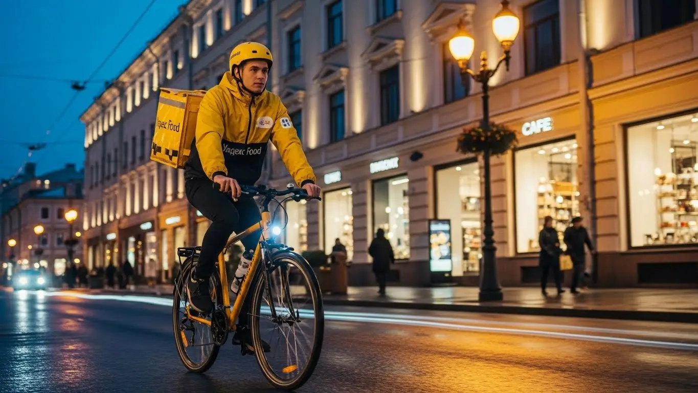
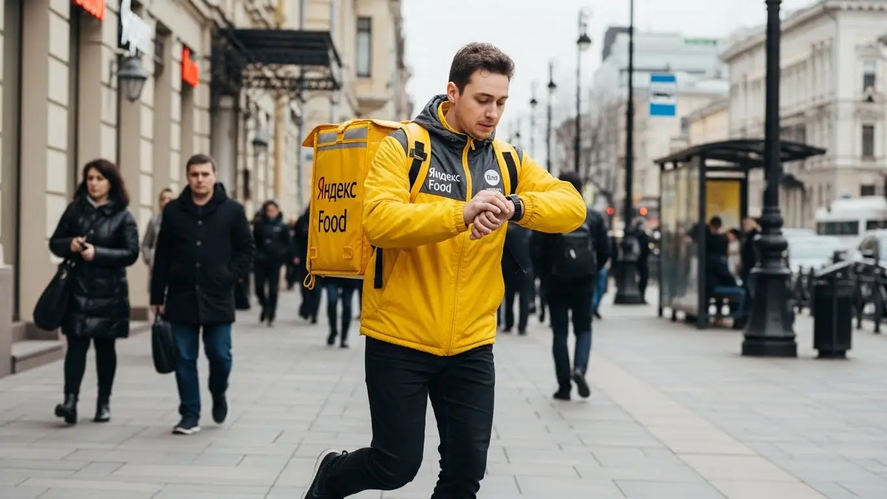
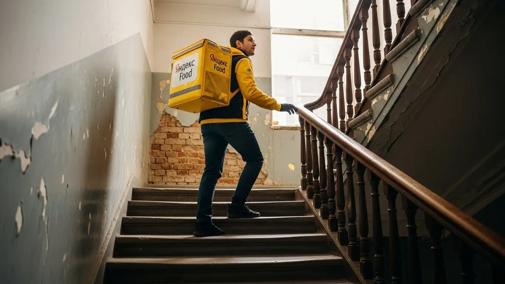
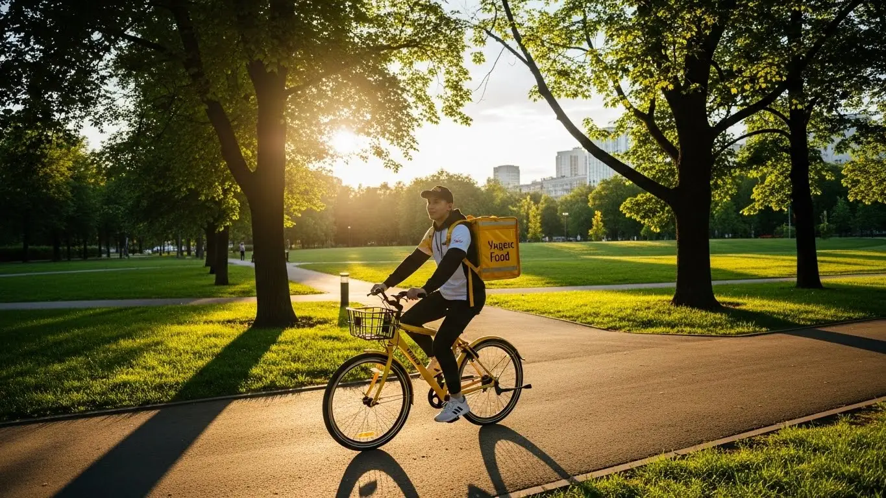

Работа курьером Яндекс Еда в Щелково 2025-2026: доход, график

- Работа курьером Яндекс Еды в Щелково: для кого эта вакансия и что вы получите
- Сколько вы будете зарабатывать курьером в Щелково: калькулятор дохода и разбор выплат
- Реальный заработок курьера в Щелково: смены и месячный доход
- График работы и форматы занятости
- Требования к кандидату и документы
- Самозанятость, налоги и юридическая чистота
- Пошаговое оформление и первый выход на линию в Щелково
- Пешком, на вело или на авто: что выгоднее в Щелково
- Районы, маршруты и «топовые» зоны заказов в Щелково
- Безопасность, страховка, штрафы и оплата простоя
- Плюсы и возможные минусы работы курьером в Щелково
- Реальные истории и отзывы курьеров из Щелково
- Ответы на главные вопросы о работе курьером Яндекс Еды в Щелково
Все города
Думаешь, работа курьером Яндекс Еды или Лавки в Щелково – это легкие деньги? Или, может, боишься, что убьешь машину на наших дорогах, застрянешь в пробках на Щелковском шоссе или Пролетарском проспекте и в итоге заработаешь копейки, да еще и штрафов нахватаешь? Знакомо. Многие приходят с такими мыслями. Но я здесь, чтобы рассказать тебе, как на самом деле обстоят дела с доставкой в нашем родном Щелково, без прикрас и рекламной шелухи.
Поверь, просто взять термосумку и выйти на линию – это полдела. Без понимания «внутрянки» курьерской работы в Щелково ты рискуешь быстро разочароваться. Одно дело – гонять по ровным улицам, другое – пробираться через дворы в Заречном или стоять в глухой пробке у ТЦ «Кенгуру» в час пипик. Расходы на бензин, налоги, система приоритетов, которая напрямую влияет на количество заказов, – все это съедает твой доход. Многие новички в Щелково совершают одни и те же ошибки, теряя время и деньги, потому что не знают местной специфики и не умеют эффективно работать с приложением Яндекс Про. Если ты живешь в Щелково, то подробнее про работу курьером Яндекс Еда в Щелково, включая краткую сводку условий, FAQ, детальный калькулятор и форму заявки, можно почитать здесь: работа курьером Яндекс Еда в Щелково.
В этой статье мы с тобой разберём все нюансы работы курьером Яндекс Еды и Яндекс Лавки именно в Щелково. Выясним, какой формат доставки выгоднее – пеший, вело или на авто, и посчитаем, сколько реально можно заработать в наших условиях. Я покажу тебе «рыбные» места и часы, где заказов больше всего, расскажу, как погода и сезоны влияют на спрос, и объясню, за что можно получить штраф и как их избежать. А еще сравним Яндекс с конкурентами в Щелково и почитаем реальные отзывы местных курьеров, чтобы ты был готов ко всему.
Я сам не первый год в этой теме, начинал курьером, а сейчас у меня небольшой таксопарк-партнёр. Так что про работу на колёсах и с доставкой в Щелково знаю не понаслышке. Давай по порядку, сейчас всё разложу по полочкам, чтобы ты не наступал на чужие грабли и сразу начал зарабатывать по максимуму. Готов? Поехали!
Чтобы тебе было проще ориентироваться, вот краткий навигатор по ключевым темам статьи.
Экспресс-навигация: что ты узнаешь о работе курьером в Щелково
В этой статье ты ТОЧНО узнаешь:
- Сколько реально можно заработать курьером в Щелково за смену и месяц, и от чего зависит доход?
- Какой формат доставки (пеший, вело, авто) выгоднее выбрать для работы в Щелково с учетом районов и пробок?
- Где в Щелково больше всего заказов и как выбирать «рыбные» зоны в приложении, чтобы не мотаться впустую?
- За что можно получить штраф, как работает страховка и что такое оплата простоя, если заказов мало?
- Нужно ли оформлять самозанятость, сколько платить налогов и насколько это сложно?
- Какие требования к курьерам, какие документы нужны и как быстро можно начать работать без опыта?
А если тебе некогда читать всю статью — переходи сразу к заключению, где ты найдёшь короткие ответы на все эти вопросы и указания, в каких разделах искать подробности.
А здесь ты найдешь наглядную инфографику, которая поможет быстро понять основные моменты.
Ключевые цифры работы курьером в Щелково
Доход в час (активные часы)
350–450 ₽
Зависит от спроса и коэффициентов
Доход за смену (8 часов)
2800–3600 ₽
При полной загрузке и хорошем спросе
Гибкость графика
Выбор слотов
Планируйте работу под свой ритм
Минимальные расходы
От 100 ₽/день
На связь, транспорт (для вело/авто)
Потенциал чаевых
До 15% заказов
При хорошем сервисе и вежливости
Работа курьером Яндекс Еды в Щелково: для кого эта вакансия и что вы получите
Работа курьером Яндекс Еды в Щелково — это не просто способ заработать, это гибкая возможность для тех, кто ищет стабильный доход без привязки к офису и строгому графику. Здесь ты сам себе хозяин, а приложение Яндекс Про предоставляет все необходимые инструменты для эффективной работы.
Например, мой знакомый Олег, студент из Щелково, успешно совмещает учебу в колледже с доставкой. Он выходит на линию 3-4 раза в неделю по вечерам и в выходные, предпочитая работать в районе Богородский. За месяц Олег зарабатывает около 35-40 тысяч рублей, что для студента — отличная прибавка к стипендии и помощь родителям. Главное для него — возможность самостоятельно выбирать график.
Таким образом, вакансия курьера в Яндекс Еде подходит широкому кругу людей, которым важна свобода и возможность быстрого заработка. Главное — желание работать и ответственный подход.
Кому подойдёт эта работа в Щелково
Эта вакансия курьера в Щелково отлично подходит тем, кто ищет гибкость и возможность быстро начать зарабатывать. Во-первых, это идеальный вариант для студентов, которым нужна подработка после пар или в выходные. Ты можешь самостоятельно планировать свои смены, не жертвуя учебой.
Во-вторых, работа курьером в Яндекс Еде — это отличный старт для людей без опыта. Здесь не требуются специальные навыки или многолетний стаж; всему необходимому тебя научат на онлайн-обучении. Это снимает барьер для многих, кто только начинает свой трудовой путь.
Кроме того, работа курьером подойдет водителям, которые хотят использовать свой автомобиль для дополнительного дохода, а также тем, кому важен свободный график и ежедневные выплаты. Если ты ценишь независимость и хочешь самостоятельно управлять своим временем, эта работа — твой вариант.
Главные преимущества для жителей районов Богородский, Чкаловский, Заречный
Одно из ключевых преимуществ работы курьером в Щелково — это возможность работать рядом с домом, не тратя время и деньги на долгие поездки через весь город. Для жителей таких районов, как Богородский, Чкаловский (Щёлково-4) или Заречный, это особенно актуально. В этих локациях достаточно кафе, ресторанов и магазинов, подключенных к Яндекс Еде, что обеспечивает стабильный поток заказов.
Ты можешь выходить на смену прямо из дома, например, в районе Богородский, и выполнять заказы в пределах своего квартала или соседних улиц. Это не только удобно, но и экономит твои силы и время, которые ты мог бы потратить на дорогу. В Чкаловском, например, много жилых комплексов и точек общепита, что делает его привлекательной зоной для пеших и велокурьеров, обеспечивая им стабильный заработок.
Такой подход позволяет тебе лучше ориентироваться на местности, быстрее доставлять заказы и, как следствие, увеличить свой доход. Жители Заречного также оценят возможность работать в знакомых дворах, а не мотаться по незнакомым улицам.
Краткое обещание по доходу и условиям
Работая курьером Яндекс Еды в Щелково, ты можешь рассчитывать на вполне реальный и конкурентный доход. В среднем, за одну смену продолжительностью 8-10 часов, автокурьер может заработать от 3000 до 4500 рублей, велокурьер — от 2500 до 3500 рублей, а пеший курьер — от 2000 до 3000 рублей. Соответственно, при полной занятости, твой месячный заработок может составлять от 40 000 до 70 000 рублей и выше, в зависимости от твоей активности и выбранного графика.
Важное преимущество — это ежедневные выплаты. Ты не ждешь зарплату раз в месяц, а получаешь деньги на карту каждый день, что очень удобно для планирования бюджета. Кроме того, для работы не нужен опыт, а оформление самозанятости происходит быстро и просто, что позволяет начать работу с гибким графиком, делая эту вакансию доступной и привлекательной для многих.
Сколько вы будете зарабатывать курьером в Щелково: калькулятор дохода и разбор выплат
Давай теперь разберемся, как формируется твой заработок курьера в Щелково. Это не просто фиксированная ставка, а целая система, которая позволяет тебе влиять на свой доход. Понимание этих механизмов поможет тебе зарабатывать больше и эффективнее планировать свои смены в Яндекс Еде.
Вот, например, история моего знакомого Сергея, который работает автокурьером в Щелково. Сергей заметил, что в будни вечером, особенно в плохую погоду, заказов становится больше, а коэффициенты растут. Он старается брать слоты именно в это время, и его доход за 4-5 часов такой смены может быть выше, чем за целый день в обычное время. Сергей также активно пользуется картой спроса в приложении Яндекс Про, чтобы выбирать самые «рыбные» зоны для доставки.
Таким образом, твой заработок складывается из нескольких компонентов, и зная их, ты сможешь максимально эффективно использовать свое время. Калькулятор дохода, о котором мы поговорим дальше, поможет тебе прикинуть потенциальный заработок курьера, исходя из твоих возможностей.
Из чего складывается доход курьера
Твой доход курьера в Яндекс Еде складывается из нескольких ключевых составляющих. Во-первых, это оплата за каждый выполненный заказ. Сумма зависит от сложности, веса и категории заказа. Во-вторых, ты получаешь доплату за расстояние, которое проезжаешь или проходишь от точки получения до клиента. Чем дальше доставка, тем выше эта часть оплаты.
Кроме того, существуют повышающие коэффициенты, которые активируются в часы пик, в районах с высоким спросом или в плохую погоду. Это отличный способ увеличить свой заработок, когда город «горит» от заказов. Также предусмотрены бонусы за выполнение определенного количества заказов за смену или неделю, что стимулирует к более активной работе.
Не стоит забывать и про чаевые от клиентов — это приятный бонус, который полностью остается у тебя. И, что очень важно, Яндекс Еда предлагает оплату простоя: если ты вышел на смену, а заказов временно нет, тебе всё равно начисляется минимальная оплата за время ожидания. В некоторых случаях возможна и компенсация проезда, если маршрут был особенно длинным или сложным, что делает работу курьером более выгодной.
Как пользоваться калькулятором дохода
Калькулятор дохода — это удобный инструмент, который поможет тебе прикинуть, сколько ты сможешь заработать курьером в Щелково. Пользоваться им очень просто: сначала тебе нужно выбрать тип доставки, который тебе подходит — пеший курьер, велокурьер или автокурьер. Это основной параметр, который влияет на потенциальный заработок в Яндекс Еде.
Далее ты указываешь, сколько часов в день ты планируешь работать и сколько дней в неделю готов выходить на смены. Например, ты можешь выбрать 4 часа в день и 5 дней в неделю, если ищешь подработку, или 8-10 часов и 6 дней, если нацелен на полную занятость. На выходе калькулятор покажет тебе примерный дневной и месячный доход, который ты можешь получить в Щелково, учитывая средние тарифы и коэффициенты сервиса Яндекс Еда.
Важно понимать, что это ориентировочные цифры, которые дают общее представление. Реальный заработок может немного отличаться в зависимости от конкретных заказов, твоей скорости и умения выбирать выгодные слоты, но калькулятор даёт хорошую отправную точку для планирования своего дохода.
Калькулятор дохода курьера в Щелково
8 часов в день
5 дней в неделю
Примерный доход:
0 ₽ в день
0 ₽ в месяц
Расчёт примерный и основан на усреднённых показателях для Щелково. Реальный доход может отличаться в зависимости от спроса, бонусов, коэффициентов и вашей активности.
Чтобы узнать подробнее об условиях работы, требованиях, FAQ и заполнить заявку на работу курьером Яндекс Еда в твоём городе, переходи по ссылке: работа курьером Яндекс Еда в твоём городе.
Примеры расчёта для пешего, вело- и авто‑курьера в Щелково
Давай рассмотрим несколько реальных сценариев работы курьером для Щелково, чтобы ты мог лучше представить свой потенциальный доход.
Пеший курьер в центре Щелково:
Предположим, ты работаешь 5 часов в день в будни, с 18:00 до 23:00, в районе ТРЦ «КЭМП» и прилегающих улицах. В это время много заказов из ресторанов и кафе. За смену ты можешь выполнить 6-8 заказов, зарабатывая в среднем 2000-2500 рублей. За месяц, работая 20 дней, твой потенциальный доход составит около 40 000 — 50 000 рублей.
Велокурьер между спальными районами:
Если ты предпочитаешь велосипед, то можешь работать 7 часов в день, например, с 12:00 до 19:00, охватывая районы Сиреневый и Щёлково-7. Здесь много жилых домов и продуктовых магазинов, что обеспечивает стабильный поток заказов. За смену ты можешь заработать 2500-3500 рублей, выполняя 8-10 заказов. При 22 рабочих днях в месяц это принесет тебе доход в 55 000 — 77 000 рублей.
Водитель-курьер по всему городу и пригороду:
На автомобиле ты можешь брать более дальние заказы, включая доставку в соседние Фрязино или Королёв. Работая 9 часов в день, с 10:00 до 19:00, ты сможешь выполнять 10-12 заказов. Твой средний доход за смену составит 3500-4500 рублей. При полной занятости (22 рабочих дня) это принесет тебе заработок в 77 000 — 99 000 рублей в месяц.
| Параметр | Пеший курьер | Велокурьер | Автокурьер |
|---|---|---|---|
| Средний доход за смену (8-10 часов) | 2000-3000 ₽ | 2500-3500 ₽ | 3500-4500 ₽ |
| Оптимальные зоны в Щелково | Центр, ТРЦ «КЭМП», плотная застройка | Сиреневый, Щёлково-7, Заречный (между спальниками) | Весь город, включая Фрязино, Королёв |
| Требования к транспорту | Не требуется | Велосипед (свой) | Автомобиль (свой), права категории B |
| Физическая нагрузка | Высокая | Средняя/Высокая | Низкая/Средняя |
| Скорость доставки | Средняя (в центре высокая) | Высокая (без пробок) | Высокая (на дальние расстояния) |

Как видишь, потенциал заработка напрямую зависит от выбранного тобой формата работы и активности. Выбирай тот, что лучше всего подходит под твои возможности и цели. Главное, что работа курьером в Яндекс Еде в Щелково даёт тебе инструменты для прозрачного и понятного дохода.
Реальный заработок курьера в Щелково: смены и месячный доход
Давай разберемся, сколько реально можно заработать курьером в Щелково. Это не Москва, где плотность населения и заказов зашкаливает, но и не глухая провинция. Здесь есть свои особенности, которые влияют на твой доход. Главное — понимать, как работает система, и использовать это в свою пользу. Твой доход в Яндекс Доставке, включая возможность ежедневных выплат, складывается из множества факторов: это и тип доставки, и время, и даже погода.
Я, как человек с опытом, могу сказать, что стабильный доход возможен, если ты подходишь к делу с головой. Например, один мой знакомый, водитель-курьер в Щелково, Андрей, стабильно выходит на смены по 8-9 часов в будни и 4-5 часов в выходные. Он знает все «рыбные» места и пиковые часы, поэтому его месячный заработок редко опускается ниже 70 000 рублей, а в хорошие месяцы доходит до 90 000. Андрей не просто катается по городу, а продумывает каждый свой выход, чтобы максимизировать заработок.
Диапазон дохода для подработки и полной занятости
Реальный заработок курьера в Щелково сильно зависит от того, сколько времени ты готов уделять работе и на каком транспорте передвигаешься. Если говорить о подработке, то за 2–4 часа в день пеший курьер может получать от 800 до 1500 рублей. Велокурьер, благодаря большей мобильности, за то же время способен заработать 1200–2000 рублей. Водитель-курьер, конечно, имеет самый высокий потенциал: за 2–4 часа реально получить 1500–2500 рублей, особенно если брать заказы в часы пик.
При полной занятости, то есть 8–10 часов в день, цифры становятся гораздо интереснее. Пеший курьер в Щелково может рассчитывать на 30 000–45 000 рублей в месяц. Велокурьер, активно работая, способен зарабатывать 45 000–65 000 рублей. А вот водители-курьеры, которые могут охватывать весь город и даже пригороды вроде Фрязино или Ивантеевки, выходят на 65 000–90 000 рублей и выше. Это, конечно, при условии, что ты работаешь 5-6 дней в неделю и не пропускаешь выгодные слоты, доступные в приложении Яндекс Про.
| Тип курьера | Подработка (2-4 часа/день) | Полная занятость (8-10 часов/день) | Месячный доход (полная занятость) |
|---|---|---|---|
| Пеший курьер | 800 – 1500 ₽ | 3000 – 4500 ₽ | 30 000 – 45 000 ₽ |
| Велокурьер | 1200 – 2000 ₽ | 4500 – 6500 ₽ | 45 000 – 65 000 ₽ |
| Автокурьер | 1500 – 2500 ₽ | 6500 – 9000 ₽ | 65 000 – 90 000+ ₽ |
Вывод по доходу: Твой заработок курьера в Щелково напрямую зависит от вложенного времени и выбранного транспорта. Водители-курьеры имеют самый высокий потенциал, но и пешие с велокурьерами могут получать достойные деньги, особенно на подработке в Яндекс Еде. Мой совет: если хочешь стабильно зарабатывать, выбирай формат, который позволит тебе работать в пиковые часы и дни.
Как район, время суток и погода влияют на доход
В Щелково, как и в любом городе, есть свои «хлебные» места и часы для курьерской работы. Вечера, особенно с 18:00 до 22:00, и выходные дни – это золотое время для курьеров Яндекс Еды. В эти периоды люди чаще заказывают еду из ресторанов и продукты из магазинов, требующие доставки в термокоробе, что приводит к росту спроса и, соответственно, к повышающим коэффициентам. Например, в районе ТЦ «КЭМП» или ТЦ «Гранд Плаза» вечером всегда много заказов, и за них платят больше.

Погода тоже играет огромную роль. Когда на улице дождь, снег или сильная жара, желающих выйти за едой становится меньше, а заказов – больше. В такие дни коэффициенты могут взлетать в 1,5-2 раза. Кроме того, клиенты чаще оставляют чаевые, видя, что курьер Яндекс Доставки работает в сложных условиях. Это отличная возможность для увеличения заработка, но, конечно, требует готовности к работе в не самых комфортных условиях.
Вывод по факторам дохода: Чтобы увеличить свой заработок курьера в Щелково, ориентируйся на пиковые часы (вечера, выходные) и не бойся работать в плохую погоду. Именно в эти моменты спрос на доставку максимален, а значит, и твои выплаты будут выше за счет повышающих коэффициентов и чаевых.
Советы по увеличению заработка от опытных курьеров
Чтобы зарабатывать больше, нужно не просто кататься, а работать с умом. Во-первых, всегда старайся брать слоты в районах с высокой плотностью заказов. В Щелково это, например, центральные улицы вроде Пролетарского проспекта, а также крупные жилые массивы Щёлково-7 и Богородский, где много кафе и магазинов. Отслеживай карту спроса в приложении «Яндекс Про» – она показывает зоны с наибольшим количеством заказов и действующими повышающими коэффициентами.
Во-вторых, не бойся комбинировать типы доставки, если это возможно. Например, если ты водитель-курьер, но видишь, что в центре Щелково, вокруг улицы Заречной, пробки, а заказы короткие, то иногда выгоднее оставить машину и взять несколько пеших или велозаказов. Такой подход позволяет не терять время впустую и максимально эффективно использовать каждый час смены. Главное – заранее продумать логистику и быть готовым к смене формата.
Вывод по советам: Для максимального заработка курьера в Щелково активно используй карту спроса в «Яндекс Про», выбирай выгодные слоты и зоны, а также будь готов к гибкости в выборе транспорта. Это поможет тебе повысить свой доход без лишних переработок и эффективно использовать свое время, работая в Яндекс Доставке.
График работы и форматы занятости
Свободный график – одно из главных преимуществ работы курьером в Яндексе, особенно для самозанятых. В Щелково это работает так же хорошо, как и везде. Ты сам решаешь, когда и сколько работать, что позволяет легко совмещать курьерскую работу с учебой, основной занятостью или личными делами. Это не пустые слова, а реальная возможность выстраивать свой день так, как удобно тебе.

Многие мои ребята в таксопарке, которые подрабатывают курьерами Яндекс Еды, ценят именно эту свободу. Например, студент из Щёлково-3, который учится в местном колледже, может брать смены по 3-4 часа вечером, а в выходные работать по 6-8 часов. Это позволяет ему не только оплачивать свои расходы, но и иметь карманные деньги, не жертвуя учебой.
Подработка после учёбы или основной работы
Для студентов или тех, у кого уже есть основная работа, Яндекс Еда в Щелково предлагает отличные возможности для подработки. Например, ты можешь выходить на линию по вечерам в будни, скажем, с 18:00 до 22:00. За эти 4 часа, работая пешим курьером в районе улицы Талсинской, где много жилых домов и небольших кафе, можно заработать 1000–1500 рублей. Если ты велокурьер, то и до 2000 рублей.
Другой вариант – работать только по выходным. Многие выбирают субботу и воскресенье, когда спрос на доставку традиционно выше. Выходя на 6–8 часов в каждый из этих дней, велокурьер в Щелково-4 или Щёлково-7 может приносить домой 3000–4000 рублей за выходные. Это позволяет получать дополнительный доход в 12 000–16 000 рублей в месяц, не меняя свой основной график.
Полная занятость: как выглядит типичный день курьера
Типичный день курьера на полной занятости в Щелково начинается не слишком рано, обычно к 9-10 утра. Многие предпочитают стартовать в центре города или в крупных жилых районах, таких как Щёлково-1 или Богородский, где уже начинают работать кафе и магазины. Утром заказов в Яндекс Доставке не так много, но они стабильные – завтраки, кофе, офисные обеды.
Пик приходится на обеденное время (с 12:00 до 14:00) и вечер (с 18:00 до 22:00). В эти часы курьер активно перемещается между ресторанами и клиентами, стараясь максимально быстро выполнять заказы, чтобы взять следующий. Между пиками можно сделать перерыв, пообедать или просто отдохнуть. Опытные курьеры Яндекс Еды выбирают зоны с высоким спросом и стараются не выезжать далеко за их пределы, чтобы минимизировать холостой пробег и максимизировать количество выполненных заказов.
Как планировать слоты и выходы через приложение «Яндекс Про»
Приложение «Яндекс Про» – твой главный инструмент для планирования работы курьером. Через него ты можешь заранее выбрать удобные слоты (временные промежутки) и зоны работы в Щелково. Это позволяет тебе контролировать свой график и не тратить время на ожидание заказов в неподходящем месте. Важно бронировать слоты заранее, особенно если хочешь работать в пиковые часы или в популярных районах, так как они быстро разбираются.
Критически важно не опаздывать на забронированные слоты. Система «Яндекс Про» отслеживает твою пунктуальность, и регулярные опоздания могут негативно сказаться на твоем рейтинге. А высокий рейтинг, в свою очередь, открывает доступ к более выгодным заказам и слотам, обеспечивая стабильный доход. Так что, если ты забронировал слот, будь на линии вовремя – это залог твоего успеха и хорошего заработка курьера.
Вывод по графику и занятости: Работа курьером в Щелково предлагает полную гибкость, будь то подработка или полная занятость. Используй приложение «Яндекс Про» для грамотного планирования слотов и зон, а также следи за своим рейтингом, чтобы всегда иметь доступ к лучшим заказам и стабильному доходу. Это ключевые условия работы курьером в Яндекс Еде.
Требования к кандидату и документы
Когда речь заходит о работе курьером, у многих сразу возникают вопросы: «А возьмут ли меня?», «Какие документы нужны?», «С какого возраста можно начать?». Это нормально, и я тебе сейчас всё подробно объясню, чтобы ты понимал, что к чему. Требования к курьерам Яндекс Еды в Щелково, как и по всей стране, довольно простые и прозрачные. Главное — желание работать и ответственный подход.
Возраст, гражданство и базовые условия
Для того чтобы стать курьером Яндекс Еды в Щелково, как и в большинстве городов России, тебе должно быть не меньше 18 лет. Это стандартное требование, которое касается всех, кто хочет работать курьером на любом виде транспорта – пешим, вело- или автокурьером. Что касается гражданства, то здесь тоже всё просто: принимаются граждане Российской Федерации, а также стран ЕАЭС (Беларусь, Казахстан, Армения, Кыргызстан).
Помимо возраста и гражданства, есть и базовые требования к физической форме и здоровью. Для пеших и велокурьеров важна выносливость, ведь придется много ходить или крутить педали, особенно в таких районах Щелково, как Богородский или Заречный, где много жилых домов и магазинов. Для автокурьеров, конечно, физическая нагрузка меньше, но тоже нужно быть внимательным и готовым к длительным поездкам по городу и пригородам. В целом, никаких особых спортивных нормативов сдавать не нужно – достаточно быть в нормальной физической форме, чтобы без проблем доставлять заказы. Курьерская работа в Яндекс Еде доступна даже без опыта, главное — активность.
Кейс из практики: Помню, как-то пришел к нам парень, хотел работать пешим курьером в Щёлково-7. Он переживал, что у него нет спортивного прошлого, но оказалось, что его обычной активности вполне хватало. После нескольких смен он сам удивился, насколько быстро втянулся и даже стал чувствовать себя лучше. Главное — не лениться и быть готовым к движению.
Вывод по разделу: Требования к возрасту (от 18 лет) и гражданству (РФ или ЕАЭС) — это базовые условия для старта. Физическая форма нужна лишь для комфортной работы, а не для олимпийских рекордов. Не бойся, если ты не спортсмен, главное — быть активным и ответственным.
Какие документы нужны для работы курьером
Теперь давай разберемся с документами. Это один из самых частых вопросов, и тут важно всё подготовить заранее, чтобы не терять время. Для работы курьером Яндекс Еды тебе понадобится стандартный набор, который легко собрать.
Вот чёткий список документов:
- Паспорт гражданина РФ или ЕАЭС: Он нужен для подтверждения твоей личности и гражданства. Убедись, что срок действия паспорта не истёк.
- ИНН (Идентификационный номер налогоплательщика): Без него не получится оформить самозанятость и легально платить налоги. Если у тебя его нет, получить ИНН можно в любой налоговой инспекции или на сайте ФНС.
- Банковская карта: На неё будут приходить все твои выплаты. Важно, чтобы карта была оформлена на твоё имя.
- Медицинская книжка (медкнижка): Этот документ нужен не всем курьерам, а только тем, кто доставляет продукты из магазинов или готовые блюда из ресторанов, где есть строгие санитарные требования. Если ты планируешь работать только с доставкой документов или других непищевых товаров, медкнижка не потребуется. Если же она нужна, её можно оформить в любом медицинском центре, имеющем соответствующую лицензию.
Подготовить эти документы заранее — значит сэкономить себе время и нервы. Все данные ты будешь вносить в анкету онлайн, поэтому достаточно иметь их под рукой.
Кейс из практики: У меня был случай, когда один парень из Анискино очень хотел выйти на линию, но забыл свой ИНН. Пришлось ему ехать домой, искать. В итоге потерял полдня. Поэтому я всегда говорю: проверь всё заранее, чтобы потом не было таких задержек.
Вывод по разделу: Для старта тебе понадобятся паспорт, ИНН и банковская карта. Медкнижка нужна только для работы с продуктами питания. Собери всё это заранее, чтобы быстро пройти регистрацию и начать зарабатывать.
Можно ли работать с 16 лет и какие есть альтернативы
Многие молодые ребята, особенно студенты из Щелково, спрашивают, можно ли начать работать курьером Яндекс Еды с 16 лет. Отвечаю честно: нет, в Яндекс Еду берут только с 18 лет. Это связано с особенностями законодательства и условиями работы, которые предполагают полную ответственность и самостоятельность.
Если тебе ещё нет 18, но ты хочешь подработать, не расстраивайся. Есть и другие варианты, которые подойдут подросткам. Например, можно рассмотреть работу промоутером, раздавать листовки в торговых центрах Щелково, таких как ТЦ «КЭМП» или ТЦ «Гранд Плаза». Также можно найти подработку в сфере услуг, например, помощником в кафе или магазинах, которые готовы брать несовершеннолетних с соблюдением всех норм Трудового кодекса РФ (ограниченный график, отсутствие ночных смен). Главное — искать легальные варианты, чтобы не попасть в неприятную ситуацию.
Кейс из практики: Мой племянник, когда ему было 17, тоже рвался в курьеры. Я ему объяснил, что пока рано. В итоге он нашел подработку в местном кафе в Щёлково-3, помогал на кухне. И деньги заработал, и опыт получил, и к 18 годам уже точно знал, что хочет работать в доставке.
Вывод по разделу: В Яндекс Еду берут строго с 18 лет. Если ты моложе, ищи альтернативные варианты подработки, которые соответствуют законодательству, например, промоутер или помощник в сфере услуг.
Самозанятость, налоги и юридическая чистота
Вопросы про «официальность», налоги и юридические тонкости часто пугают новичков. Многие привыкли к старой схеме работы или боятся сложностей с бухгалтерией. Но в случае с Яндекс Едой и самозанятостью всё гораздо проще, чем кажется. Давай разберем это по полочкам, чтобы у тебя не осталось никаких сомнений в курьерской работе с Яндекс.
Почему курьеры Яндекс Еды работают как самозанятые
Формат самозанятости, или как его ещё называют, налог на профессиональный доход (НПД), стал настоящим спасением для многих, кто ищет гибкую работу. Яндекс Еда активно сотрудничает с самозанятыми курьерами, и это выгодно обеим сторонам. Для тебя это означает полностью официальный доход, который ты получаешь за свои услуги. Ты работаешь легально, и это даёт тебе спокойствие и уверенность в завтрашнем дне.
Главное преимущество самозанятости — это отсутствие сложной бухгалтерии. Тебе не нужно нанимать бухгалтера, заполнять кучу бумаг или разбираться в дебрях налогового кодекса. Вся отчётность максимально упрощена и ведётся через специальное приложение «Мой налог». Ты просто фиксируешь свой доход, и система сама рассчитывает сумму налога. Это позволяет тебе сосредоточиться на доставке заказов по Щелково, а не на бумажной волоките.
Кейс из практики: У меня в таксопарке много водителей, которые раньше работали «вчерную». Когда появилась самозанятость, многие перешли на неё и вздохнули с облегчением. Один парень из Медвежьих Озёр рассказывал, как раньше переживал из-за проверок, а теперь спит спокойно, зная, что его доход легален и все налоги уплачены.
Вывод по разделу: Самозанятость — это официальный и легальный способ получать доход от курьерской работы. Она избавляет от сложной бухгалтерии и позволяет работать спокойно, без лишних переживаний.
Как за 10 минут оформить самозанятость через «Мой налог»
Оформить самозанятость — это действительно быстро и просто. Тебе не нужно никуда ходить, всё делается онлайн, буквально за 10-15 минут. Это можно сделать через официальное приложение «Мой налог» или через партнёров Яндекса, которые помогут тебе с регистрацией. Для дальнейшей работы и получения заказов тебе также понадобится приложение Яндекс Про.
Вот пошаговая схема:
- Скачай приложение «Мой налог»: Оно доступно для Android и iOS.
- Зарегистрируйся: Для этого тебе понадобится паспорт (или его данные) и ИНН. Можно зарегистрироваться по паспорту РФ, через портал Госуслуг или личный кабинет налогоплательщика.
- Введи данные: Приложение попросит тебя ввести номер телефона, паспортные данные и ИНН.
- Сделай селфи: Для подтверждения личности нужно будет сделать фотографию лица.
- Выбери вид деятельности: Укажи «Услуги по доставке» или «Курьерские услуги».
После этих шагов ты сразу получишь статус самозанятого. Всё, ты готов к работе! Это намного проще, чем кажется, и не займёт много времени.
Кейс из практики: Мой знакомый, который только начинал работать курьером в Щёлково, оформил самозанятость прямо в кафе, пока ждал первый заказ. Он был удивлён, насколько это быстро и безболезненно.
Вывод по разделу: Регистрация самозанятости через приложение «Мой налог» занимает всего 10-15 минут. Это простой онлайн-процесс, который не требует визитов в госучреждения и позволяет быстро начать курьерскую работу.
Сколько и как платить налоги
Теперь о самом главном — налогах. Как самозанятый курьер, ты будешь платить налог на профессиональный доход (НПД). Ставка налога очень низкая:
- 4% с доходов, полученных от физических лиц (то есть от клиентов Яндекс Еды).
- 6% с доходов, полученных от юридических лиц или ИП (например, от самого Яндекса как партнёра).
Как происходит списание? Всё максимально автоматизировано. Когда ты получаешь выплату за заказ, ты формируешь чек в приложении «Мой налог». В конце месяца налоговая служба сама рассчитывает общую сумму налога на основе всех твоих чеков и присылает уведомление в приложении. Тебе остаётся только оплатить его до 28 числа следующего месяца.
Это гораздо проще и безопаснее, чем работать неофициально или за «серый» кэш. Во-первых, ты не рискуешь получить штрафы за незаконную предпринимательскую деятельность. Во-вторых, у тебя формируется официальный доход, который может пригодиться, например, для получения кредита или подтверждения платежеспособности. Это прозрачно, понятно и выгодно для самозанятых.
Кейс из практики: Один из наших курьеров в Щелково-7 раньше работал без оформления, и постоянно переживал. Когда перешел на самозанятость, он понял, что 4-6% — это небольшая плата за спокойствие и легальность. Он даже стал откладывать деньги на пенсию, зная, что его доход официален.
Вывод по разделу: Самозанятые курьеры платят всего 4% или 6% налога. Списание происходит автоматически через приложение «Мой налог», что делает процесс простым, безопасным и выгодным по сравнению с неофициальной работой.
Пошаговое оформление и первый выход на линию в Щелково
Начать работать курьером в Яндекс Еде в Щелково гораздо проще, чем кажется на первый взгляд. Многие думают, что это сложный и долгий процесс с кучей бумаг, но на самом деле всё делается быстро и в основном онлайн. Моя задача как опытного человека — показать тебе, что путь от заполнения анкеты до первого заказа максимально прозрачен и понятен, даже если у тебя нет опыта. Важно отметить, что для курьерской работы в Яндекс Еде потребуется оформить самозанятость, но это тоже быстрый и простой процесс.
Вся процедура оформления занимает минимум времени, и ты можешь выйти на линию уже в тот же день или на следующий. Главное — внимательно следовать инструкциям и не бояться задавать вопросы. Помни, что Яндекс заинтересован в новых курьерах, поэтому система настроена на максимальное упрощение старта и предлагает свободный график с возможностью ежедневных выплат.
Шаг 1–2: анкета и онлайн‑обучение
Первое, с чего ты начнешь, — это заполнение анкеты на сайте или через приложение Яндекс Про. Там будут базовые вопросы: имя, фамилия, номер телефона, город (Щелково, конечно), а также тип транспорта, на котором планируешь работать (пеший, вело или автокурьер). Важно указывать актуальные данные, чтобы не возникло проблем с проверкой и соблюсти все требования. После отправки анкеты твои данные проверят, это обычно занимает немного времени.
Далее тебя ждет короткое онлайн-обучение. Не пугайся, это не университетская лекция, а серия видеороликов и текстовых материалов, которые объясняют основные правила сервиса, стандарты общения с клиентами и, что очень важно, правила безопасности. В конце каждого модуля будут небольшие тесты, чтобы убедиться, что ты усвоил информацию. Это обучение помогает новичкам быстро освоиться и избежать типичных ошибок, делая условия работы понятными с самого начала.
Шаг 3: получение сумки и доступа к заказам в Щелково
Как только ты успешно пройдешь обучение, следующим шагом станет получение фирменной термосумки или термокороба и экипировки. В Щелково это можно сделать несколькими способами. Чаще всего, ты можешь забрать сумку через одного из партнёров Яндекс Еды или в специальном пункте выдачи. Адреса таких точек всегда доступны в приложении Яндекс Про, так что ты легко найдешь ближайший к тебе.
Иногда есть возможность заказать доставку сумки прямо домой, что очень удобно, если ты живешь, например, в Щёлково-3 или Богородском. После получения сумки и подтверждения всех данных, тебе откроется доступ к заказам в приложении. Это значит, что ты уже готов к работе и можешь выбирать слоты для доставки.
Шаг 4: первый слот и первый доход
Теперь, когда все формальности улажены, пора выходить на линию. В приложении Яндекс Про ты увидишь доступные слоты — это временные отрезки, когда ты можешь выполнять заказы. Для первого раза советую выбрать знакомый район Щелково, например, центральные улицы или свой микрорайон, чтобы было проще ориентироваться. Выбирай удобное время, например, пару часов вечером, чтобы попробовать, ведь график работы полностью свободный.
После выбора слота и выхода на линию тебе начнут поступать первые заказы. Не переживай, если сначала будет немного непривычно — это нормально. Главное, следуй инструкциям в приложении, будь вежлив с клиентами и не бойся обращаться в поддержку, если возникнут вопросы. Твой первый доход не заставит себя ждать, и ты увидишь, что заработок курьером — это вполне реальная и быстрая возможность, особенно с ежедневными выплатами.
Кейс из практики: Мой знакомый, студент из Щёлково-7, решил попробовать себя в Яндекс Еде. Он заполнил анкету вечером, на следующий день утром прошел онлайн-обучение, а к обеду уже забрал термосумку в пункте выдачи на Пролетарском проспекте. Вечером он взял двухчасовой слот в своем районе, выполнил 4 заказа и заработал около 800 рублей. Это показало ему, что стать курьером действительно можно быстро и без опыта, без лишних заморочек.
Вывод: Процесс оформления в Яндекс Еде максимально упрощен и автоматизирован, чтобы ты мог быстро начать зарабатывать. От заполнения анкеты до первого заказа проходит минимум времени, а онлайн-обучение и поддержка помогают новичкам освоиться. Не откладывай на потом, если хочешь быстро получить первый доход и оценить преимущества свободного графика, ежедневных выплат и простого оформления самозанятости.
Пешком, на вело или на авто: что выгоднее в Щелково
Выбор транспорта для работы курьером — это ключевой момент, который напрямую влияет на твой заработок и комфорт. В Щелково, как и любом другом городе, есть свои особенности, которые делают один вид доставки выгоднее другого в зависимости от района и времени суток. Я сам прошел через все эти этапы и могу сказать, что универсального ответа нет, но есть оптимальные стратегии для пеших, вело и автокурьеров.
Важно понимать, что каждый формат работы — пеший курьер, велокурьер или водитель-курьер на своем авто — имеет свои преимущества и недостатки. Твоя задача — выбрать тот, который лучше всего соответствует твоим возможностям, образу жизни и районам, где ты планируешь работать. Давай разберем каждый вариант подробнее, привязываясь к специфике Щелково и условиям работы.
| Параметр | Пеший курьер | Велокурьер | Водитель‑курьер |
|---|---|---|---|
| Зоны работы в Щелково | Центр, Пролетарский проспект, ул. Комарова | Щёлково-3, Богородский, Заречный (между спальниками) | Весь город, Фрязино, Королёв, Ивантеевка |
| Средний доход за час | Ниже среднего, но стабильно в пики | Средний, выше в часы пик | Выше среднего, особенно на дальних заказах |
| Скорость доставки | Низкая, зависит от плотности застройки | Высокая, объезд пробок | Высокая, но зависит от пробок |
| Физическая нагрузка | Высокая | Средняя/высокая (оплачиваемый фитнес) | Низкая |
| Расходы | Минимальные (проезд) | Минимальные (обслуживание вело) | Высокие (топливо, ТО, амортизация) |
| Погодные условия | Сильно влияет | Сильно влияет | Меньше влияет, комфортнее |
Пеший курьер: для центра и плотной застройки в Щелково
Пешая доставка — отличный вариант для тех, кто предпочитает работать без опыта и дополнительных вложений в транспорт, не боясь физической активности. В Щелково пешим курьерам особенно выгодно работать в центральных районах, где плотная застройка и много пешеходных зон. Это, например, район Пролетарского проспекта, улицы Комарова и прилегающие к ним кварталы.
Здесь много кафе, ресторанов и магазинов, а расстояния между точками часто небольшие. В часы пик, когда на дорогах пробки, пеший курьер может быть даже быстрее автокурьера, так как ему не нужно искать парковку и он может срезать путь через дворы. К тому же, это отличная возможность совместить подработку с прогулкой и поддерживать себя в форме.
Велокурьер: быстрые доставки между спальными районами
Велокурьеры — это золотая середина между пешими и автокурьерами. Они обладают высокой скоростью и маневренностью, что позволяет им эффективно избегать пробок и быстро перемещаться по городу. В Щелково велосипед особенно удобен для доставки между спальными районами, такими как Щёлково-3, Богородский или Заречный. Здесь расстояния уже больше, чем в центре, но еще не настолько критичны, чтобы требовался автомобиль.
Преимущества велокурьеров очевидны: ты не тратишься на топливо, получаешь «оплачиваемый фитнес» и можешь быстро доставлять заказы, что напрямую влияет на твой заработок. К тому же, велосипед дает больше свободы передвижения, чем автомобиль, особенно в условиях городской застройки.
Водитель‑курьер: заказы по всему городу и пригороду Фрязино, Королёв, Ивантеевка
Если у тебя есть личный автомобиль, то работа водителя-курьера в Яндекс Еде или Яндекс Доставке открывает самые широкие возможности для заработка в Щелково. Ты можешь брать заказы по всему городу, включая дальние районы, а также выполнять доставки в пригороды, такие как Фрязино, Королёв или Ивантеевка. Именно на таких дальних заказах доход за один рейс значительно выше.
Автомобиль особенно выгоден в плохую погоду (дождь, снег) и в часы пик, когда пешим и велокурьерам работать сложнее, а спрос на доставку растет. Комфорт в салоне, возможность перевозить крупные заказы и не зависеть от погодных условий делают этот формат привлекательным для многих. Однако, не забывай про расходы на топливо и обслуживание авто — их нужно учитывать при расчете чистого дохода. Важно также помнить о возможности страхования во время доставок и оплате простоя, что делает условия работы более стабильными.
Кейс из практики: Мой знакомый водитель-курьер из Щелково, который живет в районе Щёлково-7, обычно берет слоты по вечерам и в выходные. Он специализируется на доставках в соседние Фрязино и Ивантеевку. За 5-часовую смену в пятницу вечером он может заработать до 3000 рублей, выполняя 5-6 заказов. Он говорит, что главное — выбирать зоны с повышенным спросом и не бояться дальних поездок, ведь именно там кроются самые выгодные заказы и хороший доход.
Вывод: Выбор транспорта для работы курьером в Яндекс Еде или Яндекс Доставке в Щелково зависит от твоих личных предпочтений и географии. Пеший курьер хорош для центра, велокурьер — для быстрых перемещений между спальными районами, а автокурьер — для охвата всего города и пригородов. Оцени свои возможности и выбирай тот формат, который принесет тебе максимальный доход и комфорт, учитывая условия работы и возможность подработки.
Районы, маршруты и «топовые» зоны заказов в Щелково
Для курьера в Щелково, как и в любом другом городе, знание «рыбных» мест — это половина успеха. От правильного выбора района и маршрута напрямую зависит, сколько заказов ты получишь, как быстро их доставишь и, в конечном итоге, сколько заработаешь. Курьерская работа здесь требует не просто кататься, а делать это с умом, используя особенности города в свою пользу.
В Щелково есть свои особенности, которые влияют на плотность заказов и повышающие коэффициенты. Это и крупные торговые центры, и плотные жилые застройки, и даже офисные кластеры. Понимание этих зон поможет тебе оптимизировать свою работу в Яндекс Еде и избежать холостых пробегов.
Где больше всего заказов: ТРЦ, бизнес‑центры и туристические места
Если хочешь стабильный поток заказов и хорошие повышающие коэффициенты, ориентируйся на места с высокой концентрацией магазинов, кафе и офисов. В Щелково это, в первую очередь, крупные торговые и развлекательные центры. Например, ТРЦ «Щёлково» на Пролетарском проспекте — настоящий магнит для выгодных заказов. Здесь множество ресторанов, фудкортов и магазинов, которые активно пользуются услугами доставки Яндекс Еды.
Еще одна точка притяжения для курьеров — ТЦ «КЭМП» на Талсинской улице. Вокруг него тоже всегда кипит жизнь, много кафе и закусочных, что обеспечивает стабильный спрос на доставку. В обеденные часы и по вечерам, особенно в выходные, в этих зонах часто действуют повышенные коэффициенты, что позволяет зарабатывать значительно больше за каждый выполненный заказ.
Помимо ТРЦ, стоит обратить внимание на деловые кварталы и офисные центры, расположенные ближе к центру города. В будние дни, с 12:00 до 15:00, оттуда идет большой поток заказов на бизнес-ланчи. Опытные курьеры знают, что в это время выгодно находиться именно там, чтобы максимально эффективно использовать пиковые часы и увеличить свой доход.
Кейс из практики: Велокурьер Сергей, работая в обеденный пик (с 12:00 до 15:00) в районе ТРЦ «Щёлково», за три часа успевает выполнить 5-6 заказов. Благодаря повышенным коэффициентам и коротким дистанциям, его средний доход за этот слот составляет около 1500-1800 рублей, что значительно выше базовой ставки.
Работа в своём районе: примеры для популярных жилых кварталов
Не всегда нужно ехать в центр, чтобы хорошо заработать. Работа курьером в своем районе — это отличный способ экономить время и деньги на дорогу, а также лучше ориентироваться на местности. В Щелково есть несколько популярных жилых кварталов, где плотность заказов из местных кафе, ресторанов и Яндекс Лавки позволяет стабильно работать, почти не выезжая за пределы привычных улиц.
Возьмем, к примеру, микрорайоны Борисовка, Заречный или Чкаловский. Это густонаселенные спальные районы с развитой инфраструктурой, где много жилых домов и, соответственно, много клиентов, заказывающих еду и продукты. Здесь удобно работать пешим курьерам или велокурьерам, так как расстояния между точками доставки обычно небольшие, а пробки не так сильно влияют на скорость.
Такой формат работы особенно подходит для тех, кто ищет подработку после основной работы или учебы. Ты можешь выйти на линию прямо из дома, отработать несколько часов в знакомых дворах и быстро вернуться. Это минимизирует холостые пробеги и позволяет максимально эффективно использовать время, увеличивая свой заработок.
Кейс из практики: Пеший курьер Анна из микрорайона Потапово предпочитает работать по вечерам с 18:00 до 22:00. Она берет слоты в своем районе, доставляя заказы из местных пиццерий и супермаркетов. За 4 часа ей удается выполнить 7-8 заказов, зарабатывая в среднем 1200-1400 рублей, при этом не тратясь на проезд и хорошо зная все короткие пути.
Как выбирать зоны и слоты в «Яндекс Про», чтобы не мотаться впустую
Приложение «Яндекс Про» — твой главный инструмент для эффективной работы курьером. На его карте спроса всегда видно, где сейчас высокий спрос на курьеров и где действуют повышающие коэффициенты. Это позволяет не мотаться впустую по всему Щелково, а целенаправленно ехать туда, где заказов больше и они выгоднее, увеличивая твой заработок.
При планировании смены старайся выбирать слоты в зонах с прогнозируемым высоким трафиком. Например, в часы пик (обед, ужин, выходные) спрос всегда выше в центральных районах или возле крупных ТРЦ. В остальное время можно переключаться на спальные районы, где тоже есть стабильный поток заказов, но без суеты.
Важно не только выбрать зону, но и грамотно планировать маршруты. Старайся брать заказы, которые логично выстраиваются в цепочку, чтобы минимизировать пустые переезды. Если видишь, что следующий заказ уведет тебя далеко от «рыбной» зоны, иногда лучше отказаться от него, чтобы не терять время и топливо на возврат. Опытные курьеры в Щелково знают, что иногда лучше подождать более выгодный заказ в своей зоне, чем гнаться за каждым предложением. Это часть условий работы, которые помогают максимизировать доход.
Кейс из практики: Автокурьер Игорь, работающий в Щелково, всегда заранее изучает карту спроса в «Яндекс Про». Он заметил, что в будни утром выгодно брать слоты в микрорайоне Чкаловский, где много заказов на завтраки, а к обеду перемещаться ближе к ТРЦ «Щёлково». Такой подход позволяет ему минимизировать холостые пробеги и поддерживать высокий средний чек за час.
| Параметр | Зоны высокого спроса (ТРЦ, БЦ) | Спальные районы (Борисовка, Заречный) |
|---|---|---|
| Тип курьера | Пеший, вело, авто (в зависимости от трафика) | Пеший, вело (оптимально), авто |
| Потенциальный доход | Высокий, за счет повышающих коэффициентов | Стабильный, но без резких пиков |
| Плюсы | Много заказов, высокие коэффициенты, короткие дистанции | Знание местности, экономия на проезде, меньше пробок |
| Минусы | Высокая конкуренция, возможные пробки, сложности с парковкой | Меньше повышающих коэффициентов, иногда дольше ожидание |
Вывод по районам и маршрутам: Правильный выбор зоны и грамотное планирование маршрутов — это ключ к высокому заработку курьера в Щелково. Всегда ориентируйся на карту спроса в «Яндекс Про» и не бойся экспериментировать с районами в зависимости от времени суток. Мой совет для тех, кто ищет работу курьером: начни с работы в своем районе, чтобы освоиться, а потом постепенно осваивай «топовые» зоны в часы пик для увеличения дохода.
Безопасность, страховка, штрафы и оплата простоя
Работа курьером, как и любая другая, имеет свои риски. Но важно понимать, что Яндекс Еда не оставляет тебя один на один с возможными проблемами. Есть четкие правила, система защиты и механизмы, которые помогают тебе чувствовать себя увереннее на линии. Давай разберем условия работы и как это работает.
Понимание этих аспектов — это не только твоя защита, но и способ избежать неприятностей, которые могут повлиять на доход и рейтинг. Честность и ответственность — твои главные помощники в этой работе.
Бесплатная страховка на сменах и что она покрывает
Один из важных плюсов работы курьером с Яндекс Едой — это бесплатная страховка жизни и здоровья, которая действует на каждой активной смене. Это не просто формальность, а реальная защита, покрывающая риски, связанные с доставкой. Если во время выполнения заказа с тобой что-то случится, ты не останешься без поддержки.
Страховка распространяется на различные страховые случаи: травмы, полученные в результате ДТП, падений или других несчастных случаев во время движения по маршруту или на территории клиента. Пределы покрытия достаточно серьезные, чтобы обеспечить тебе необходимую медицинскую помощь и компенсацию. Например, если ты, не дай бог, сломаешь ногу, доставляя заказ, страховка поможет покрыть расходы на лечение. Это важная часть условий работы.
Чтобы воспользоваться страховкой, достаточно сразу после инцидента связаться со службой поддержки через приложение Яндекс Про. Они подскажут, какие документы нужны и как действовать дальше. Это дает уверенность, что даже в непредвиденной ситуации ты не останешься без помощи.
Кейс из практики: Однажды велокурьер Олег из Щелково поскользнулся на мокрой плитке у подъезда и вывихнул руку. Он сразу же связался с поддержкой, ему помогли оформить все необходимые документы, и страховка покрыла расходы на визит к врачу и последующую реабилитацию. Это позволило ему не беспокоиться о финансовых потерях во время восстановления.
Правила безопасности на дороге и при доставке
Безопасность — это твоя ответственность, и она должна быть на первом месте. Независимо от того, пеший курьер ты, велокурьер или водитель-курьер, всегда соблюдай базовые правила. Для пеших курьеров это внимательность на переходах, использование тротуаров, а не проезжей части.
Велокурьерам особенно важно быть заметными: используй шлем, яркую одежду, передний и задний фонари, особенно в темное время суток. Всегда соблюдай правила дорожного движения, не выезжай на встречную полосу и не маневрируй между машинами. Для водителей-курьеров это стандартные ПДД, соблюдение скоростного режима и аккуратность при парковке, чтобы не создавать помех. Это важные требования для работы.
Отдельно стоит сказать про работу в плохую погоду. В дождь или снегопад дороги становятся скользкими, видимость ухудшается. В такие дни будь особенно осторожен, снижай скорость и внимательнее следи за окружающими. Аккуратность нужна и при обращении с заказами и деньгами: всегда проверяй целостность упаковки и будь внимателен при расчетах.
Кейс из практики: Автокурьер Дмитрий из Щелково однажды ехал по Щелковскому шоссе в сильный ливень. Благодаря тому, что он заранее снизил скорость и держал дистанцию, ему удалось избежать столкновения, когда впереди резко затормозила машина. Он доставил заказ целым и невредимым, а главное — сам остался в безопасности.
Какие бывают штрафы и как их избежать
Система штрафов в Яндекс Еде существует не для того, чтобы тебя наказать, а чтобы поддерживать высокий уровень сервиса и дисциплины. Это часть системы мотивации и контроля качества. Важно понимать, за что могут применить штрафы или понизить рейтинг, чтобы этого не допускать при курьерской работе.
Основные причины для штрафов или снижения рейтинга включают: грубость или некорректное общение с клиентом, порча заказа (например, если еда пролилась или остыла по твоей вине), регулярные опоздания на точку выдачи или к клиенту, а также необоснованные отмены уже принятых заказов. Все это напрямую влияет на удовлетворенность клиента и репутацию сервиса Яндекс Доставка.
Как этого избежать? Все просто: будь вежлив и доброжелателен с клиентами, аккуратно обращайся с заказами, следи за временем и старайся не опаздывать. Если возникла непредвиденная ситуация (пробка, поломка), сразу свяжись со службой поддержки и предупреди клиента. Открытое общение и своевременное решение проблем помогут избежать большинства штрафов и сохранить высокий рейтинг.
Кейс из практики: Пеший курьер Максим получил понижение рейтинга и небольшой штраф за то, что забыл часть заказа в ресторане. Он извлек урок, стал внимательнее проверять комплектацию и теперь всегда переспрашивает у сотрудников, все ли на месте. С тех пор подобных проблем у него не возникало, и рейтинг восстановился.
Что такое оплата простоя и как она защищает ваш доход
Оплата простоя — это одно из ключевых преимуществ работы курьером с Яндекс Едой, которое выгодно отличает сервис от многих конкурентов. Это механизм, который защищает твой доход, даже если заказов временно мало или возникают задержки, не зависящие от тебя. Ты не теряешь деньги, просто ожидая.
Как это работает? Если ты находишься на активной смене, но заказов нет, или ты вынужден ждать в ресторане, пока приготовят еду, или клиент долго не выходит за заказом — это время оплачивается. Система автоматически фиксирует время ожидания и начисляет за него компенсацию. Это значит, что ты получаешь деньги за свое время, даже если не выполняешь активную доставку. Это обеспечивает стабильные выплаты.
Оплата простоя действует в нескольких случаях: ожидание нового заказа на линии, ожидание в точке выдачи (ресторан, магазин), ожидание клиента по адресу доставки. Это дает уверенность в стабильном доходе, ведь ты знаешь, что твое время ценится и оплачивается, даже если спрос временно снизился. Это очень важная гарантия, особенно для новичков, которые только осваиваются в Щелково и ищут работу курьером без опыта.
Кейс из практики: Автокурьер Светлана взяла слот в Щелково в середине дня, когда спрос обычно ниже. В течение часа у нее был всего один заказ, но она получила оплату за простой, пока ждала следующий. В итоге, за этот час она заработала не только за доставку, но и за время ожидания, что значительно сгладило просадку в доходе.
| Параметр | Бесплатная страховка | Штрафы | Оплата простоя |
|---|---|---|---|
| Суть | Защита жизни и здоровья на смене | Санкции за нарушения правил сервиса | Компенсация времени ожидания заказов/клиентов |
| Покрытие/Причины | Травмы, ДТП на маршруте | Грубость, порча заказа, опоздания, отмены | Ожидание заказа, в ресторане, клиента |
| Как избежать/использовать | Связаться с поддержкой при инциденте | Вежливость, аккуратность, пунктуальность | Автоматически начисляется, защищает доход |
| Значение для курьера | Чувство защищенности, минимизация рисков | Мотивация к качественной работе, поддержание рейтинга | Гарантия стабильного дохода, даже при низком спросе |
Вывод по безопасности и оплате простоя: Яндекс Еда предоставляет курьерам серьезную поддержку в виде страховки и оплаты простоя, что делает работу курьером более безопасной и предсказуемой в плане дохода. Однако, чтобы избежать штрафов и поддерживать высокий рейтинг, всегда соблюдай правила безопасности и будь вежлив. Мой совет: всегда будь на связи с поддержкой при любых вопросах или проблемах — это поможет решить большинство ситуаций в твою пользу и улучшить условия работы.
Плюсы и возможные минусы работы курьером в Щелково
Когда ты рассматриваешь работу курьером в Яндекс Еде в Щелково, важно понимать, что это не только про деньги, но и про реальные условия. Как и в любой другой сфере, здесь есть свои сильные стороны и подводные камни. Моя задача как старшего брата — дать тебе честную картину, чтобы ты мог принять взвешенное решение о такой занятости.
Не стоит идеализировать или, наоборот, демонизировать эту деятельность. Она подходит не всем, но для многих становится отличным решением финансовых вопросов или способом получить ценный опыт. Главное — быть готовым к особенностям и знать, как справляться с трудностями.
Сильные стороны работы курьером в Щелково
Первое, что привлекает в работе курьером Яндекс Еды в Щелково — это, конечно, гибкий график. Ты сам решаешь, когда выходить на линию: можно трудиться пару часов после учебы, в выходные или полный день, если нужна основная занятость. Это особенно удобно для студентов Щелковского колледжа или тех, кто ищет подработку.
Кроме того, ты получаешь ежедневные выплаты, что для многих является критически важным фактором. Деньги приходят на карту быстро, и не нужно ждать конца месяца. Возможность работать рядом с домом — еще один большой плюс: ты можешь выбирать слоты в своем микрорайоне, например, в Богородском или Чкаловском, что экономит время и силы на дорогу по Щелково.
Немаловажный аспект — поддержка и страховка. Яндекс заботится о своих курьерах, предоставляя страховку на время смены, что дает дополнительную уверенность. Все выплаты официальные, ты оформляешься как самозанятый, платишь налог 4-6% и спишь спокойно, зная, что твой доход легален. Это прозрачные условия работы, которые ценят многие, выбирая Яндекс Еду.
С какими сложностями чаще всего сталкиваются курьеры
Конечно, есть и обратная сторона медали. Работа курьером — это физическая нагрузка, особенно для пеших и велокурьеров. Приходится много ходить или крутить педали, подниматься по лестницам. В Щелково, как и везде, бывают заказы на верхние этажи без лифта, к этому надо быть готовым.
Погода тоже может внести свои коррективы. Дождь, снег, сильный ветер или жара — доставлять заказы приходится в любых условиях. Важно иметь подходящую экипировку, например, непромокаемый термокороб или термосумку, чтобы не промокнуть и не замерзнуть. Возможны и простои, когда заказов мало, особенно в будни днем или в непиковые часы. Однако, в Яндекс Еде есть система оплаты простоя, которая частично компенсирует это время.
Общение с разными клиентами — еще один момент. Большинство людей адекватны, но иногда встречаются и те, кто может быть недоволен или груб. Здесь важно сохранять спокойствие и вежливость, чтобы не испортить себе рейтинг в Яндекс Про. Из практики: один мой знакомый автокурьер, Андрей, работает в Щелково. Однажды он попал в сильный ливень, и заказ немного промок. Клиент был очень недоволен, но Андрей спокойно объяснил ситуацию, извинился и предложил связаться с поддержкой через Яндекс Про. В итоге, рейтинг не пострадал, а клиент получил компенсацию. Главное — не паниковать и действовать по правилам.
Краткий вывод по разделу: Работа курьером в Щелково предлагает отличные возможности для гибкого заработка с ежедневными выплатами и официальным оформлением. Однако она требует готовности к физическим нагрузкам и труду в разных погодных условиях. Чтобы успешно справляться, всегда будь готов к любым ситуациям и имей запасной план на случай простоев.
Кому такая работа подходит, а кому лучше поискать другой формат
Эта работа идеально подходит тем, кто ценит свободу и гибкость. Если ты студент, которому нужна подработка, или человек, который хочет совмещать занятость с другими делами, то курьерская доставка в Щелково — отличный вариант. Она также подойдет тем, кто ищет работу без опыта, готов к физической активности и не боится общения с людьми.
Однако, если ты предпочитаешь стабильный офисный график, не любишь физический труд или плохо переносишь плохую погоду, то, возможно, стоит рассмотреть другие варианты. Работа курьером требует определенной самодисциплины и умения быстро адаптироваться к меняющимся условиям. Если тебе важен четкий распорядок дня и минимальное взаимодействие с внешним миром, то удаленная или офисная занятость будет более подходящей.
Реальные истории и отзывы курьеров из Щелково
Чтобы ты лучше понимал, как эта работа функционирует на практике, я собрал несколько историй от реальных курьеров, которые работают в Щелково. Это не выдумки, а живой опыт людей, которые каждый день на линии. Такие отзывы сотрудников помогают увидеть работу изнутри и понять, подходит ли она тебе.
Эти рассказы показывают, что каждый находит в этой деятельности что-то свое, и что в Щелково есть свои особенности, которые нужно учитывать. Отзывы курьеров — это лучшее социальное доказательство, которое поможет тебе принять решение о вакансии курьера Яндекс.
История студента Щелковского колледжа, который совмещает учёбу и доставку
«Привет! Меня зовут Максим, мне 19 лет, и я учусь в Щелковском колледже. Живу в микрорайоне Богородский, и это очень удобно, потому что многие заказы приходят прямо отсюда. Я работаю пешим курьером, обычно выхожу на смены по вечерам после пар, часа на 3-4, и по выходным, когда есть свободное время.
Мой день обычно выглядит так: утром учеба, потом обед, а к 17:00-18:00 я уже на линии. Часто беру заказы из ТРЦ Щёлково или из кафе на Пролетарском проспекте. В среднем за неделю у меня выходит около 8-10 тысяч рублей, если хорошо поработать. Это отличная прибавка к стипендии, хватает на карманные расходы и даже на что-то отложить. Главное — гибкий график, могу подстраивать его под расписание занятий. Это идеальная подработка для студента».
Опыт автокурьера, который выходит в пиковые часы
«Я Сергей, мне 35, и я автокурьер. У меня есть основная занятость, но по вечерам и в выходные я выхожу на линию в Яндекс Еде. Живу в микрорайоне Чкаловский, но на машине могу охватывать весь город и даже пригороды, такие как Фрязино или Ивантеевка.
Обычно выбираю слоты в пиковые часы — это вечера с 18:00 до 22:00 и выходные дни. В это время заказов больше, и коэффициенты выше. За 4-5 часов работы в пик могу заработать 2500-3500 рублей. Мне нравится такой формат, потому что я не привязан к одному месту, могу брать дальние заказы, которые пешим или велокурьерам невыгодны. Машина позволяет мне быть мобильным и быстро перемещаться между районами, например, от Центрального до Заречного. Это удобно и приносит хороший доход. Так что, работа в Яндекс Доставке на своем авто — это выгодно».
Мнение пешего или вело‑курьера о работе в центре и спальниках
«Меня зовут Аня, я велокурьер, мне 23 года. Работаю в Щелково уже полгода. Мне нравится, что это как оплачиваемый фитнес. В центре Щелково, особенно на улицах Советская и Пушкина, очень удобно работать на велосипеде — много кафе, ресторанов, и расстояния небольшие. Заказы приходят часто, но бывают пробки, которые на велике легко объехать.
В спальных районах, таких как микрорайон Потапово или Заречный, расстояния между домами и заведениями побольше, но и заказы часто объемнее. К чему пришлось привыкнуть? К тому, что иногда приходится подниматься на 9-й этаж без лифта, это бывает тяжело. Но в целом, я довольна. Могу выбирать, где доставлять, и это дает мне свободу. В центре больше суеты, в спальниках спокойнее, но дольше ехать. Каждый выбирает по себе свой формат доставки».
Краткий вывод по разделу: Истории курьеров из Щелково показывают, что работа в Яндекс Еде действительно гибкая и позволяет адаптироваться под разные жизненные ситуации. Важно выбрать подходящий для себя формат (пеший курьер, велокурьер, автокурьер) и учитывать особенности районов, чтобы максимизировать свой доход и сделать работу комфортной. Эти отзывы помогают понять реальные условия работы.
Ответы на главные вопросы о работе курьером Яндекс Еды в Щелково
Ответы на ключевые вопросы кандидатов
Нужно ли оформлять самозанятость и как платить налоги?
Да, для работы курьером в Яндекс Еде оформление статуса самозанятого обязательно. Это официальный и прозрачный способ сотрудничества, который позволяет тебе легально получать доход. Оформить самозанятость можно очень быстро, буквально за 10-15 минут, прямо через приложение «Мой налог» или с помощью партнёров Яндекса.
Налоги для самозанятых курьеров минимальные: 4% с дохода от физических лиц и 6% с дохода от юридических лиц (Яндекс выступает как юрлицо). Все расчёты происходят автоматически через приложение «Мой налог», что избавляет тебя от сложной бухгалтерии. Это удобно и безопасно, никаких «серых» схем.